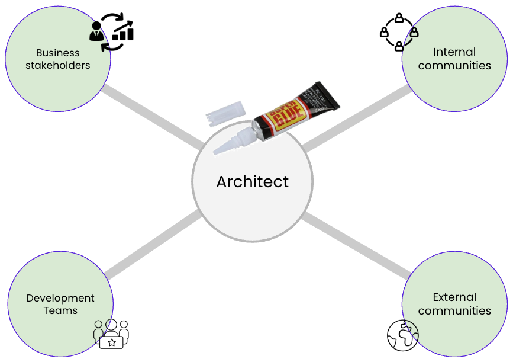

Adopting a Mindset: Architects as Superglue

IN THIS SECTION, YOU WILL: Understand the view on architects as superglue (people who hold architecture, technical details, business needs, and people together across a large organization or complex projects) and get valuable tips on developing “superglue” abilities.
KEY POINTS:
- Architects in IT organizations should develop as “superglue,” people who hold architecture, technical details, business needs, and people together across a large organization or complex projects.
- Architects need to be technically strong. But their unique strengths should stem from being able to relate technical issues with business and broader issues.
- Architects should stand on three legs: skills, impact, and leadership.
To succeed as an IT architect, you need the skills and the right mindset—a set of attitudes, beliefs, and mental frameworks that shape how you perceive and respond to situations. Regarding their role in organizations, I have found the “superglue” metaphor to be an effective way to put architects into the mindset that sets them up for success and making an impact.
The concept of “superglue” people in IT organizations emphasizes the critical role of those who act as the binding force across various facets of an organization. This idea, championed by Adam Bar-Niv and Amir Shenhav from Intel, and echoed by Tanya Reilly, underscores the need for individuals who excel in more than just technical skills. Gregor Hohpe similarly describes modern architects’ primary role as gluing different organizational functions by riding the Architect Elevator from the penthouse, where the business strategy is set, to the engine room, where engineers implement enabling technologies.
The architects acting as “superglue” should aim to hold together architecture, technical details, business needs, and people within large organizations or complex projects. Architects should function as the organizational connective tissue. They should bridge the gap between the “business wheelhouse” and the “engine room,” ensuring that technical solutions align with business goals. Their primary strength should be their ability to relate technical issues to broader organizational and business contexts.
A crucial aspect of their role involves building robust relationships with various stakeholders, including developer teams, local business stakeholders, and different functional areas within the organization. By fostering these connections, superglue architects ensure everyone is on the same page and working towards common objectives. Superglue architects must be well-integrated within internal communities. They should actively participate in internal discussions, knowledge sharing, and collaborations to stay updated and contribute meaningfully. Additionally, external visibility is vital. By engaging with the external community, these architects bring in fresh ideas and promote their organization’s innovations and achievements to the outside world.
Superglue Architects
While technical expertise is indispensable, what should set superglue architects apart is their exceptional relational skills. They must communicate effectively, negotiate, and influence various stakeholders to achieve alignment and drive projects forward. This unique blend of technical and interpersonal skills makes them invaluable in maintaining the organization’s coherence and efficiency.
 Figure 1: Architects serve as superglue, connecting development teams with business stakeholders and linking their teams with internal and external communities.
Figure 1 captures the superglue metaphor for architects, showing how they, like superglue, bond various parts of the organization:
- Developer Whisperers: Architects work closely with developers, understanding their challenges and ensuring architectural decisions enhance development efficiency and effectiveness.
- Tech-to-Business Translators: They decode technical jargon into business terms, helping stakeholders grasp the value and implications of technical decisions.
- Cross-Functional Diplomats: By engaging with operations, marketing, and finance, architects ensure technical solutions are practical, viable, and aligned with organizational strategies.
- Community Connectors: Active engagement within internal communities keeps architects informed and contributes to the collective knowledge pool.
- Industry Influencers: By being visible externally, architects learn from and influence the broader industry, bringing in fresh perspectives and establishing their organization as a thought leader.
Superglue architects are essential for the seamless operation of large and complex IT organizations. Unlike superheroes who save the day with dramatic rescues, superglue architects ensure continuous, smooth operation by connecting the dots across various organizational aspects.
So, instead of looking for a cape, IT architects should focus on becoming the superglue that holds everything together, ensuring stability, coherence, and progress within their organizations. Think of them as the organizational equivalent of duct tape—versatile, indispensable, and always ready to fix the seemingly unfixable.
Superglueing in Action: Reducing Tensions
The primary value of superglue architects in complex organizations lies in their uncanny ability to align business, product, technology, and organizational functions.
Tensions
Technology, product, organization, and business functions face specific challenges and change at different rates. Ideally, these structures should evolve simultaneously, staying in perfect sync like a well-rehearsed dance troupe. However, reality often resembles a poorly synchronized flash mob, full of tension and missteps, as illustrated in Figure 2.
 Figure 2: The tensions between technology, product, organization, and business functions.
Figure 2: The tensions between technology, product, organization, and business functions.
Imagine an organization where the teams are designed based on a well-defined domain model. Sounds great, right? Now, throw in a monolithic IT system that forces teams to collaborate in ways that resemble a traffic jam. The result? Chaos and inefficiency.
Now, flip the script: teams are aligned with a microservices architecture, each owning their service domains. However, the product architecture groups feature differently, causing a simple product change to resemble a game of “Whac-A-Mole” across dozens of services.
And let’s not forget when business objectives are as aligned as a roundabout during rush hour. In one minute, the goal is to slash costs at all costs; in the next, to add new features and migrate to the public cloud. These conflicting objectives make different parts of the organization feel like they’re playing tug-of-war—without a rope.
The main problem with the tension between technology, product, organization, and business functions is that it can significantly impede progress. Miscommunication or misalignments can turn simple tasks into bureaucratic nightmares. Furthermore, these issues can introduce overwhelming and unnecessary complexity, causing critical missed opportunities.
Reducing Tensions
Superglue architects should be able to navigate the wild complexities of modern organizations. They should ensure that the various architectures—business, product, technology, or organizational design—don’t just coexist but thrive together. This holistic approach reduces tension and misalignment, making the organization run smoother than butter on hot toast.
Architects should facilitate communication and collaboration across different domains, ensuring that changes in one area are understood and accommodated in others. In other words, they keep the chaos at bay and make sure everyone’s dance steps are in sync.
 Figure 3: Architects should be in the middle of reducing tensions between technology, product, organization, and business functions.
Figure 3: Architects should be in the middle of reducing tensions between technology, product, organization, and business functions.
Acting as superglue, the architects can effectively reduce tensions among technology, product, organization, and business functions. This act includes facilitating critical conversations between these units and ensuring alignment and cohesion. As depicted in Figure 3, the goal of architecture is not to add new constructs between these four elements, but to bring them closer together. By fostering closer relationships and better communication, architects can help these elements work in unison rather than at cross purposes.
Architects must actively engage with all stakeholders, translating technical jargon into business-friendly terms. For example, if the business wants to cut costs, architects highlight how it might impact product timelines or technical debt. Similarly, if new tech is introduced, architects ensure it aligns with product goals and organizational capabilities.
Ironically, the more successful superglue architects are in their role, the less visible their needs become. But fear not—this doesn’t make architecture redundant; it evolves the practice to be the invisible hand that keeps everything running smoothly, embedded in the daily operations of the organization. So, superglue architects, your true superpower is keeping everything stuck together!
Superglue Impact
Tensions among technology, product, organization, and business functions can slow down progress, lead to poor decisions, introduce complexity, and cause missed opportunities. Acting as superglue, architects can mitigate these issues by fostering better communication and alignment among these elements. The goal is not to create new barriers but to bring these functions closer together, ensuring a cohesive and efficient operation. This approach may appear to diminish the need for a formal architecture practice, but in reality, it transforms the role into one integral to the organization’s success.
While staying close to technology (the engine room), architects must ensure that technology serves the needs of customers and the business and that technical architecture is well-aligned with organizational design. At the same time, architects can help ensure that business, product, and organizational designs are well-informed about the state, risks, and opportunities of an organization’s technology to avoid creating impractical strategies, setting unrealistic goals, or missing opportunities.
Misalignment between these elements can introduce several key risks, which architects need to be aware of and mitigate:
-
Building the Wrong Products: If technology implementation is based on incorrect assumptions, you might create a product that doesn’t meet the actual needs. Misalignment can lead to producing irrelevant solutions, like trying to sell snow boots in the Sahara.
-
Wrong Prioritization of Activities: Without clear business and product metrics, resources might be directed towards developing “interesting” but non-valuable products. Proper alignment ensures development efforts are focused on initiatives that add real value, not on quirky side projects.
-
Unexpected Delivery Delays: Misalignment can lead to underestimating projects’ complexity, effort, and dependencies, causing significant delays. This misalignment can make a project feel perpetually stuck, like being in a time loop where unforeseen obstacles continuously hinder progress.
-
Duplication of Effort: Without harmonization across business and product strategies, efforts may be duplicated, leading to inefficiencies. This duplication is akin to repeatedly reinventing the wheel, which is wasteful and counterproductive.
-
Building Too Complex Products: Overly complex and configurable systems can be developed to address all possible scenarios, resulting in cumbersome solutions where simpler, more harmonized approaches would suffice. This complexity is like using a Swiss Army knife when only a spoon is needed—overkill and overly complicated.
-
Overengineering: Without pushback to simplify products and a lack of understanding of the technology, overengineering can occur. Imagine using a monster truck for a grocery run—impressive, but entirely unnecessary.
-
Building Too Simple, Unscalable Products: Assuming processes will be simplified and harmonized when, in reality, essential complexity needs to be supported, can lead to fragile systems. It’s like building a house of cards lacking robustness and scalability.
-
Building Low-Quality Products: Unnecessary complexity and lack of critical knowledge and expertise can lead to low-quality products that fail under pressure, like a dollar-store umbrella in a hurricane. Ensuring quality requires aligning expertise and simplifying designs where possible.
-
Complicated Dependencies Between Teams: Suboptimal organizational design and lack of awareness of system and team dependencies can slow down coordination, creating a bureaucratic nightmare. Efficient team structures and clear communication channels are crucial to maintaining momentum.
-
Creating Fragile, Unsustainable Team Structures: Relying on a small number of developers for critical technologies can make teams extremely vulnerable. Building resilient team structures with adequate support and redundancy is essential.
While architects stay close to the technology, they must ensure it works for the business and customers, not the other way around. By keeping everyone in the loop and aligned, architects help clear the many pitfalls of misalignment and keep the organizational machine running smoothly. Their role is to facilitate communication, ensure alignment, and guide the organization toward cohesive and practical solutions, preventing the myriad risks associated with misalignment.
Super(glue) Powers
Setting the architects’ goals to be “superglue” also requires some thought on developing architects as superglue. Borrowing from Gregor Hohpe’s view on architect development from his book Software Architecture Elevator, I share the view that our architects should stand on three legs:
- Skills
- Impact
- Leadership
Skills
Architects must have a solid skill set, possessing both knowledge and the ability to apply relevant knowledge in practice. These skills should include technical (e.g., cloud architecture or Kubernetes technology) as well as communication and influence skills.
A typical skillset of an architect includes:
- Hard (technical) skills: including extensive knowledge of both new technology and legacy technology stacks,
- Soft skills: like the ability to calm a panicking developer or decode the cryptic language of a business executive,
- Product development knowledge: knowing what makes a product tick,
- Business domain knowledge: understanding those endless spreadsheets,
- Decision-making skills: choosing the right path, even when both options look doomed.
The section Skills provides more details.
Impact
Impact should be measured as a benefit for the business. Architects need to ensure that what they are doing profits the business. Architects that do not make an impact do not have a place in a for-profit business.
Examples of such impact may include:
- Aligning business, product, technology, and organizational strategies,
- Process optimizations and improvements with real, measurable impact on the work of an organization,
- Cost optimizations of systems based on data-informed decisions,
- Developing pragmatic technology strategies, helping businesses reach goals sustainably,
- Driving delivery of products, supporting teams to increase quality and speed of delivery,
- Supporting business innovation, bringing new pragmatic ideas aligned with business strategy and goals.
The section Impact provides more details.
Leadership
Leadership acknowledges that experienced architects should do more than make architecture:
- They are a role model for others in the company on both the technical and cultural front.
- Their technical influence may extend beyond your organization and reach the industry at large.
- They lead efforts that solve important problems at the engineering area level.
- They may contribute to the broader technical community through tech talks, education, publications, open-source projects, etc.
- They raise the bar of the engineering culture across the company.
Mentoring junior architects is the most crucial aspect of senior architects’ leadership. Feedback cycles in (software) architecture are inherently slow. Mentoring can save new architects many years of learning by doing and making mistakes.
The section Leadership provides more details.
Balanced Powers
Architects must have a minimal “length” of all of these “legs” to be successful (Figure 4). For instance, having skills and impact without leadership frequently leads to hitting a glass ceiling. Such architects plateau at an intermediate level and cannot direct the company to innovative or transformative solutions. Leadership without impact lacks foundation and may signal that you have become an ivory tower architect with a weak relation to reality. And having impact and leadership qualities but no skills leads to impractical decisions not informed by in-depth knowledge.
In summary, developing architects as “superglue” means fostering a balanced combination of skills, impact, and leadership. Just like a three-legged stool, if one leg is too short, the whole thing topples over—quite possibly spilling your coffee in the process.
 Figure 4: Architects must have a minimal “length” of all “legs” to be successful.
Figure 4: Architects must have a minimal “length” of all “legs” to be successful.
Questions to Consider
Being a superglue architect means constantly developing and redefining your role to benefit a changing organization. Ask yourself the following questions:
- How well do you think you currently embody the characteristics of a “superglue” architect? Which areas could you improve on to become more effective in this role?
- Reflect on your ability to connect the “business wheelhouse” and the “engine room” within your organization. How effectively do you bridge the gap between technical issues and business needs?
- How strong are your relationships with developer teams, local business stakeholders, and broader internal communities? How could you strengthen these connections?
- How much external visibility do you currently have? How could this be enhanced to promote the flow of ideas into and out of the organization?
- Can you identify specific instances of tension between your organization’s technology, product, organization, and business functions? What caused this tension, and how was it addressed?
- How could your current architecture aid in reducing tension between these functions?
- Have you witnessed the architecture sitting on the side, being ignored? If so, what steps can you take to actively involve architecture in decision-making processes?
- Are conversations between the technical, product, organizational, and business functions encouraged and facilitated within your organization? If not, how might they be initiated and supported?
- Considering the three legs of a successful architect (skills, impact, leadership), which are your strongest? Which might need more development?
On Being Architect ← On Being Architect: Introduction |
On Being Architect Building Skills → |